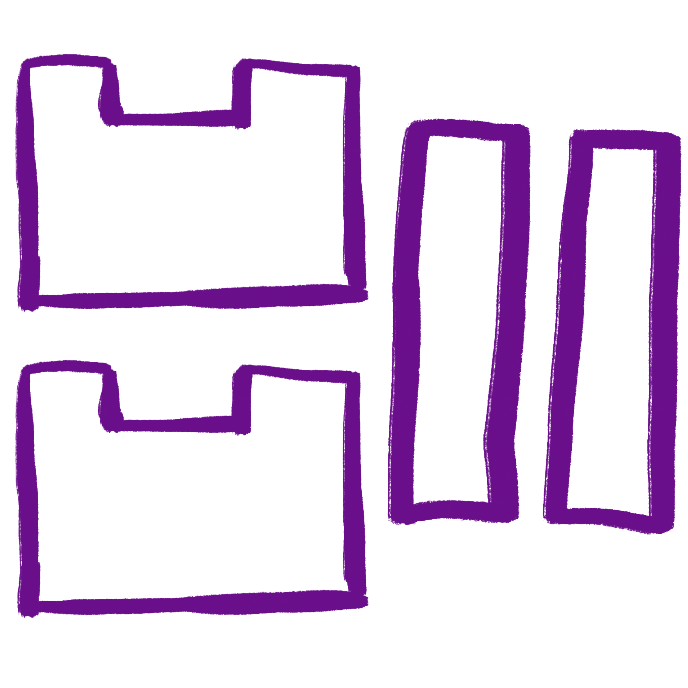
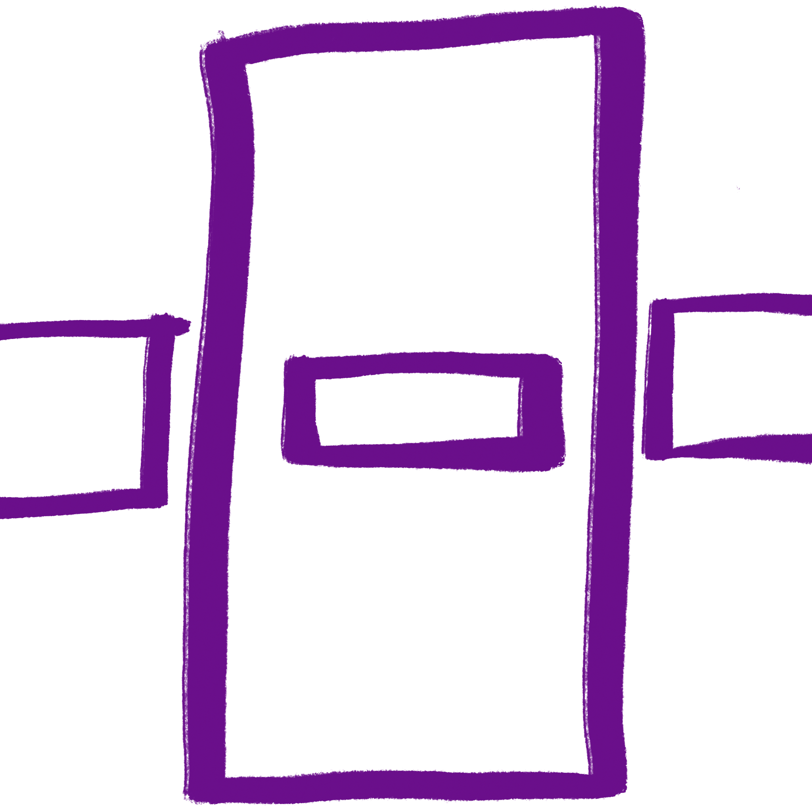
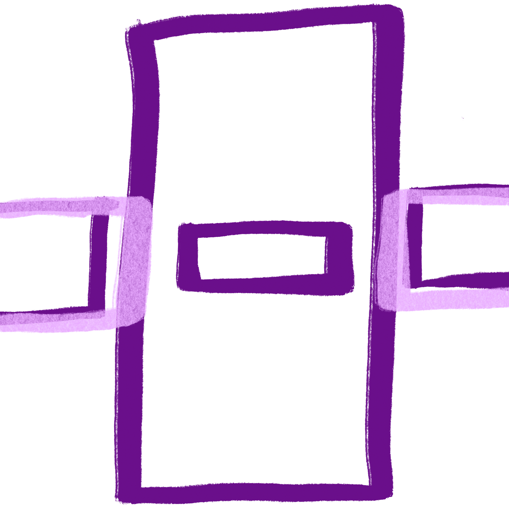

Turn your short sleeve into long sleeve:
Click on the short sleeve to make the base if you need help
how to make basic short sleeve top
This is how to make the panels

Again, please reference the short sleeve top instruction if you have trouble conceptualizing these instructions
there needs to be a front and back panel
You can have the panels as one large panel that is connected at the shoulder.
Or you can have two seperate front and back panels. It is up to you to decide.
This is how you are going to sew the panels.
Use the light area to sew your peices together to create the sleeves.
You are sewing the sleeve panels to the body panel.